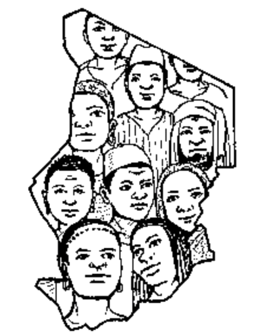

üè† Acceuil
Bienvenue - Welcome - مرحبا - dans la documentation NLP des langue thcadiennes
Toute la documentation des données est disponible sur le repository Corpus chadian languages.
Projet NLP pour les Langues Tchadiennes
Vous allez apprendre à travers ces slides sur les langues du Tchad
Le Tchad est un pays avec une large diversité linguistique et culturelle et compte plus de 123 langues autochtones selon le site Ethnologue.
Nous avons entre autre :

Adamawa Fulfulde [fub], Amdang [amj], Assangori [sjg], Bagirmi [bmi], Bagirmi Fulfulde [fui], Barein [bva], Bedjond [bjv], Berakou [bxv], Besme [bes], Bidiyo [bid], Birgit [btf], Bolgo [bvo], Bon Gula [glc], Boor [bvf], Bua [bub], Buduma [bdm], Buso [bso], Chadian Arabic [shu], Chadian Sign Language [cds], Dangaléat [daa], Dar Daju Daju [djc], Dar Sila Daju [dau],
Day [dai], Dazaga [dzg], Disa [dsi], Fania [fni], Fongoro [fgr], Fur [fvr], Gabri [gab], Gadang [gdk], Gidar [gid], Gor [gqr], Goundo [goy], Gula [glu], Gula Iro [glj], Gulay [gvl], Herdé [hed], Horo [hor], Jaya [jyy], Jonkor Bourmataguil [jeu],Kaba [ksp], Kabalai [kvf], Kajakse [ckq], Kanembu [kbl], Karang [kzr], Karanga [kth], Kendeje [klf], Kenga [kyq], Kera [ker], Kibet [kie], Kim [kia], Kimré [kqp], Koke [kou], Kujarge [vkj], Kulfa [kxj], Kuo [xuo], Kwang [kvi], Laal [gdm], Lagwan [kot], Laka [lap], Lele [lln], Luto [ndy], Maba [mde], Mabire [muj], Majera [xmj], Malgbe [mxf], Mambai [mcs], Mango [mge], Mararit [mgb], Marba [mpg], Marfa [mvu], Masalit [mls], Masana [mcn], Maslam [msv], Masmaje [mes], Massalat [mdg], Mawa [mcw], Mbara [mpk], Mbay [myb], Mesme [zim], Migaama [mmy], Miltu [mlj], Mogum [mou], Morom [bdo], Mpade [mpi], Mser [kqx], Mubi [mub], Mukulu [moz], Mulgi [mvh], Mundang [mua], Musey [mse], Musgu [mug], Muskum [mje], Naba [mne], Nancere [nnc], Ndam [ndm], Ngam [nmc], Ngambay [sba], Ngete [nnn], Niellim [nie], Noy [noy], Nzakambay [nzy], Pana [pnz], Pévé [lme], Runga [rou], Saba [saa], Sar [mwm], Sara Kaba Démé [kwg], Sara Kaba Naa [kwv], Sarua [swy], Sinyar [sys], Sokoro [sok], Soumraye [sor], Surbakhal [sbj], Tama [tma], Tamki [tax], Tedaga [tuq], Tobanga [tng], Toram [trj], Tumak [tmc], Tunia [tug], Tupuri [tui], Ubi [ubi], Yerwa Kanuri [knc], Zaghawa [zag], Zan Gula [zna]
Toutes ces langues tchadiennes sont absentes du monde numérique. Imaginez que l’un de vous veut parler uniquement Zaghawa ou Toupouri, essayant d’interagir avec un chatbot en ligne. Aujourd’hui, vous n’avez aucune option. Nous voulons changer cela.
dans le développement des technologies de traitement du langage naturel (TALN ou NLP - Natural Language Processing).
Notre projet ambitionne de développer des modèles de traitement du langage naturel (TALN ou NLP - Natural Language Processing)capables de comprendre et de répondre en langues tchadiennes.
En commençant par l’arabe tchadien, nous construirons progressivement des modèles pour d’autres langues locales. Mais nous ne nous arrêtons pas là : à long terme, nous souhaitons aller bien au-delà du texte.
??? info “Pourquoi ce projet est-il crucial ?”
`Anecdote` :
> « Mon petit-fils est allé à l'école et a appris à utiliser un ordinateur. Mais quand je lui ai demandé de me montrer comment discuter avec ces machines, il m'a dit que tout était en français ou en anglais. Alors j’ai ri et répondu : *Donc l'ordinateur ne parle pas ma langue ?* »
Ce projet est une réponse à cette réalité. Nous voulons donner une voix numérique aux langues tchadiennes et permettre à tous d’interagir avec la technologie sans barrière linguistique.Nos objectifs
1. Développer des chatbots en langues tchadiennes
Notre premier défi est de créer des modèles NLP (Natural Language Processing) capables d’interagir en langues locales. Les Tchadiens pourront discuter avec une IA dans leur langue maternelle, pour obtenir des réponses à leurs questions, apprendre de nouvelles choses ou encore accéder à des services numériques.
Exemple d’interaction envisagée en arabe tchadien :
- Utilisateur : شيلكا في السوق اليوم؟ (Qu’y a-t-il au marché aujourd’hui ?)
- Chatbot : اليوم فلفل، تمر، وسكر رخيص (Aujourd’hui, le piment, les dattes et le sucre sont à bon prix.)
Nous travaillerons d’abord sur l’arabe tchadien, puis nous étendrons aux langues comme le Ngambaye, Kanembou, Zaghawa, Moundang, Dadjo, le sara et bien d’autres.
2. Construire des modèles de traduction
Une fois les chatbots en place, nous voulons aller plus loin : développer des modèles de traduction automatique entre les langues tchadiennes, le français et l’anglais. Cela permettra par exemple de :
- Traduire des documents administratifs pour les rendre accessibles aux non-francophones.
- Faciliter l’enseignement et la diffusion de contenus éducatifs en langues locales.
- Aider les Tchadiens à mieux communiquer avec le monde extérieur.
3. Modèles vocaux (TTS et ASR)
Aujourd’hui, nous manquons de données audio pour les langues tchadiennes. Mais nous avons une vision : donner une voix aux langues locales grâce à des modèles de synthèse vocale (TTS - Text-To-Speech) et de reconnaissance vocale (ASR - Automatic Speech Recognition).
Pourquoi est-ce important ?
- Un agriculteur pourrait poser une question oralement à un assistant IA et obtenir une réponse vocale sur les meilleures pratiques agricoles d’autant plus que notre pays fait face à d’énormes défits agricoles.
- Un étudiant pourrait écouter des leçons dans sa langue maternelle au lieu de les lire.
- Une personne illettrée pourrait utiliser la technologie plus facilement.
Nous voulons enregistrer et annoter des heures de conversations, d’histoires traditionnelles et de discours pour construire ces modèles.
Un jour, nous avons demandé à une grand-mère tchadienne ce qu’elle aimerait voir dans une IA.
Elle nous a répondu : Un ordinateur qui me parle comme mes enfants !
Ce simple souhait résume tout l’enjeu de ce projet : rendre la technologie accessible et humaine, en respectant nos langues et nos cultures.
Nous ne devons pas rester passifs et éternels consommateurs.Pour cela nous aimerions rendre les outils d’IA universels et inclusifs, d’où la vitalité pour nous d’inclure nos voix et nos cultures dans cette technologie.